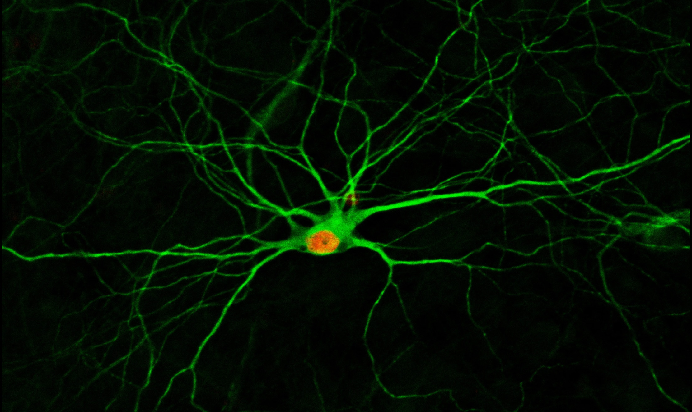
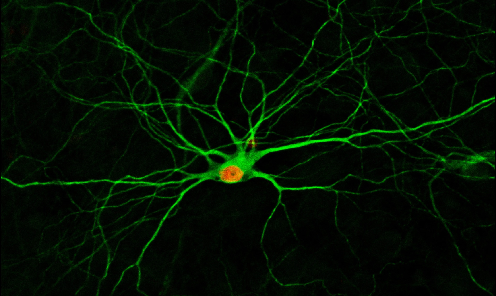

Welcome to the homepage of Jiuchao Yin!
Hi, this is Jiuchao Yin, a master student in computer science and engineering at Pennsylvania State University, with a PhD degree in Neuroscience. Strong in data analysis, critical thinking, communication, cooperation, and leadership. Familiar with C++, Python, SQL. I am currently seeking a software engineer intership position in 2020 summer.
Contact information
Jiu-Chao Yin
925 Southgate Dr,
State College,
PA, 16802, USA
Email address: jxy200@psu.edu, jiuchao1@gmail.com